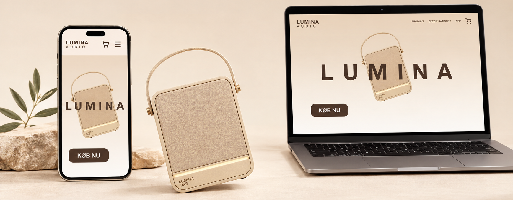

(04)
SUSTAINABLE WEB LUMINA LANDINGPAGE

EXPLORE THEOPTIMIZED SITE
CASE
Optimizing a landing page for sustainability, accessibility and responsive design.
Lumina Audio is a fictional audio brand and landing page that I revisited with a focus on sustainable web design, accessibility, responsive design and business potential. Based on an initial web audit, I identified five priority areas for improvement and used these findings as the foundation for a redesign and technical optimization of the existing solution.
The redesign was developed in Figma together with a brand manual defining Lumina’s visual identity, including typography, colours, components and image style. The goal was to improve the overall accessibility and sustainability without losing the visual identity of the brand.
AUDIT
Identifying problems through user testing and automated tools.
Before redesigning the interface, we audited the existing solution through user testing, automated tools, ORCA/OOUX and a manual code review.
The audit revealed issues across performance, accessibility, information architecture and responsiveness. Instead of redesigning based only on visual preferences, we used these findings to prioritize where changes would have the greatest impact. This resulted in five focus areas: making product information more accessible, reducing resource consumption, improving the information architecture, creating a responsive layout and making the purchase flow clearer.
OPTIMIZATION
Implementing five prioritized recommendations across four focus areas.
I implemented the redesign in HTML and CSS with a focus on making the existing solution more accessible, responsive and sustainable. Product images were compressed and converted to WebP, images below the hero section were lazy-loaded, and external fonts were replaced with system fonts to reduce unnecessary data transfer.
I also improved the semantic HTML structure, added more descriptive alt text and created more accessible interactive elements. The layout was rebuilt for both mobile and desktop using flexible sizing, CSS Grid and Flexbox, while the navigation and content structure were adjusted to create a clearer experience across screen sizes.
FINAL OUTCOME / RESULTS
Measurable improvements in performance and carbon footprint.
The optimization resulted in significant improvements in performance and resource consumption. Website Carbon improved from F to A+, while the estimated CO₂ emissions decreased from 0.39 g to 0.03 g per page view. Lighthouse Performance increased from 75 to 98, and Largest Contentful Paint was reduced from 7.4 seconds to 2.0 seconds.
The project also showed that accessibility cannot be evaluated through automated scores alone. Although several accessibility issues were addressed, the final tests still revealed areas for further improvement. This reinforced the importance of combining automated testing with manual evaluation and user testing when optimizing a digital solution.